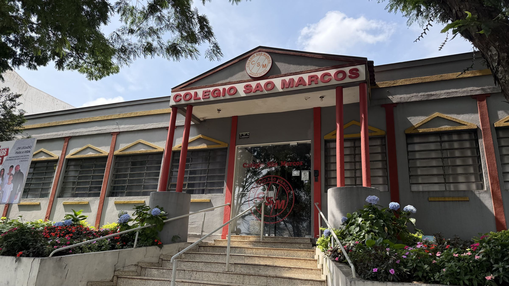
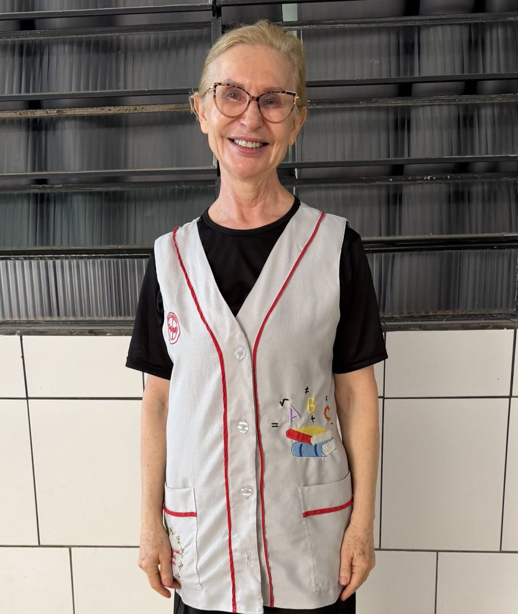
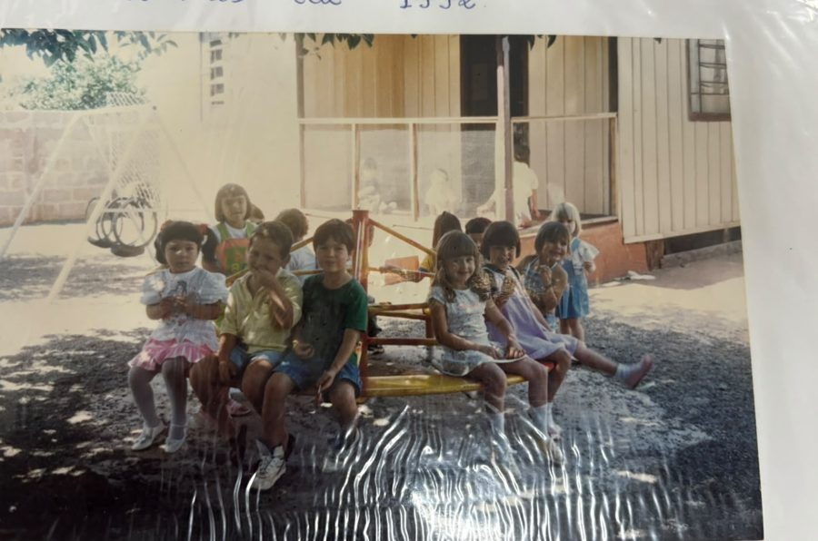
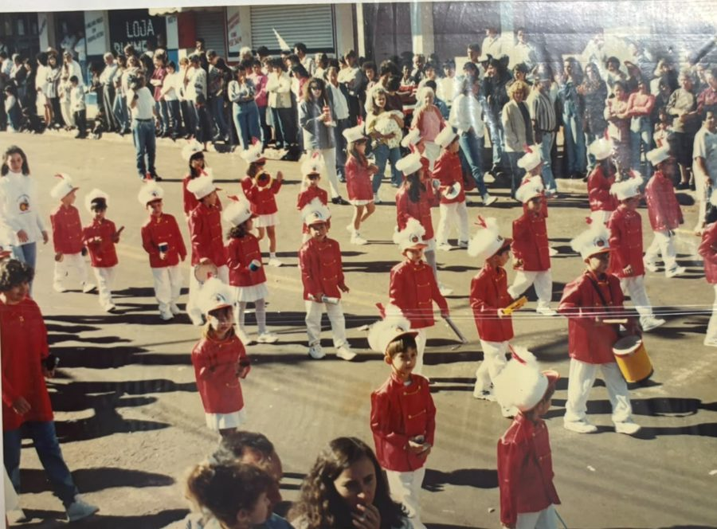
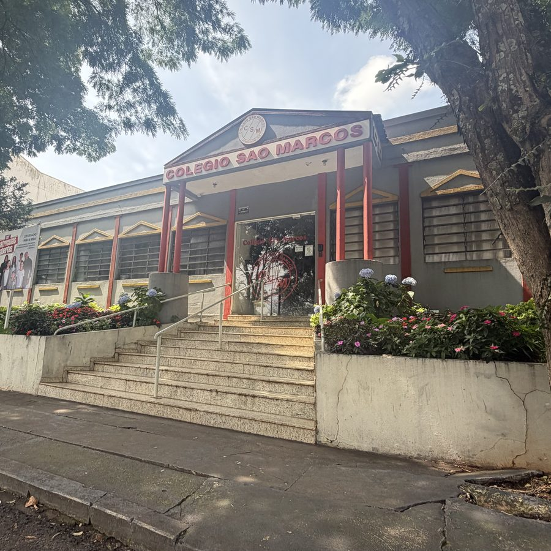

Da Educação Infantil ao Ensino Médio, com uma equipe que conhece cada aluno pelo nome. Em Jandaia do Sul desde 1991.
Toda a vida escolar num só lugar, com a mesma equipe acompanhando cada passo.
Rotina completa no contraturno, com acompanhamento de perto. descrição a enviar pelo colégio
Saiba mais →Aprender descobrindo, num ambiente lúdico que constrói identidade e autonomia.
Observar, comparar e analisar para aplicar o que aprende na vida prática.
Saber ser, saber fazer e saber conviver, com conteúdos integrados.
Um tema por série e orientação para a escolha profissional na 3ª série.

Cada profissional na sua área, atento às necessidades de cada aluno.
No Médio, cada série tem um tema que integra todas as disciplinas.
Grupos e entrevistas individuais na 3ª série.
Visitas a creche, asilo e galpão de reciclagem na 2ª série.
Fundado para formar alunos preparados para as mudanças do mundo.

Alunos de 1992 Apresentação no Ginásio de Esportes
Apresentação no Ginásio de Esportes
A fanfarra nas ruas da cidade Campeões dos Jogos Escolares
Campeões dos Jogos EscolaresGerações de alunos passaram por aqui. A próxima pode ser a do seu filho.
Matricule-seEsporte, arte, tecnologia e idiomas no contraturno.


Agende uma visita, conheça as salas, a equipe e nossa proposta de ensino.